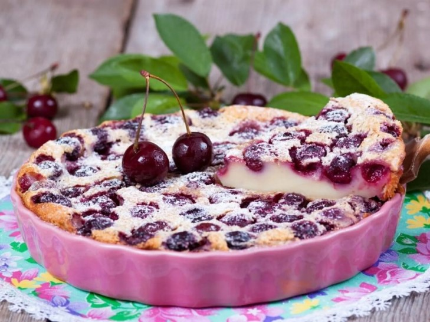
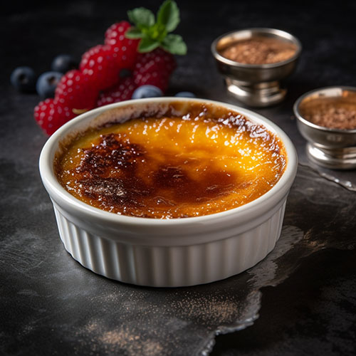
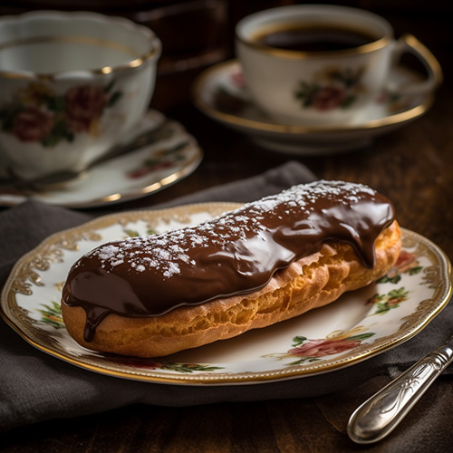
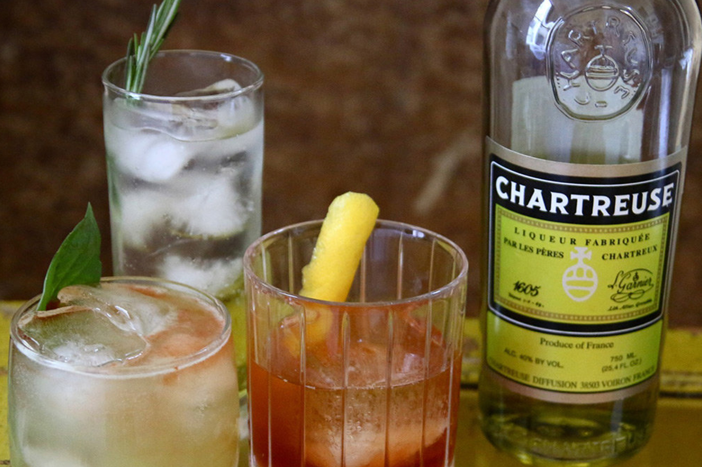
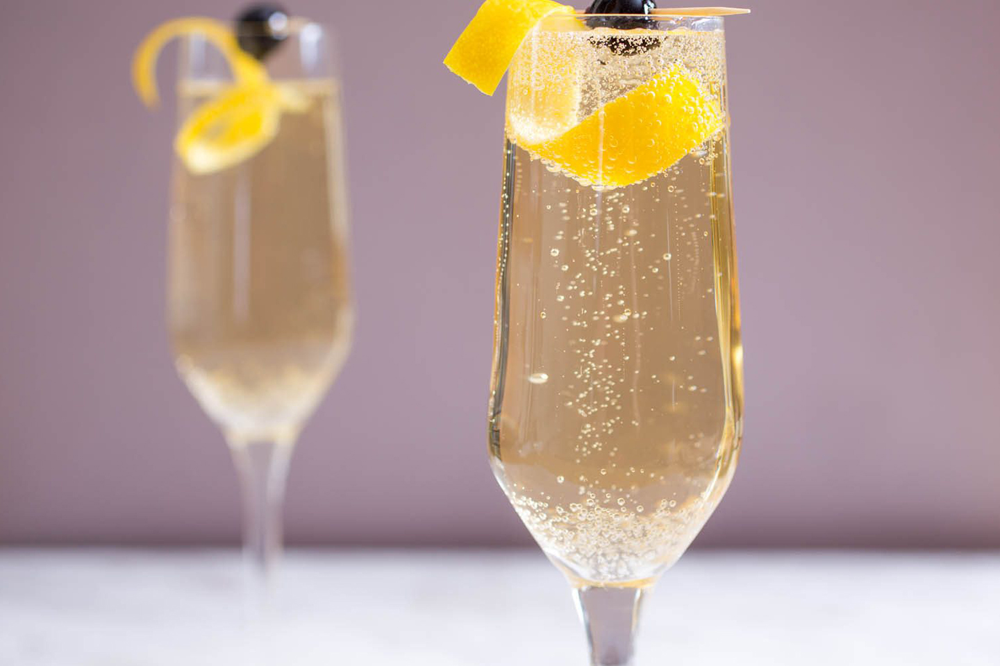
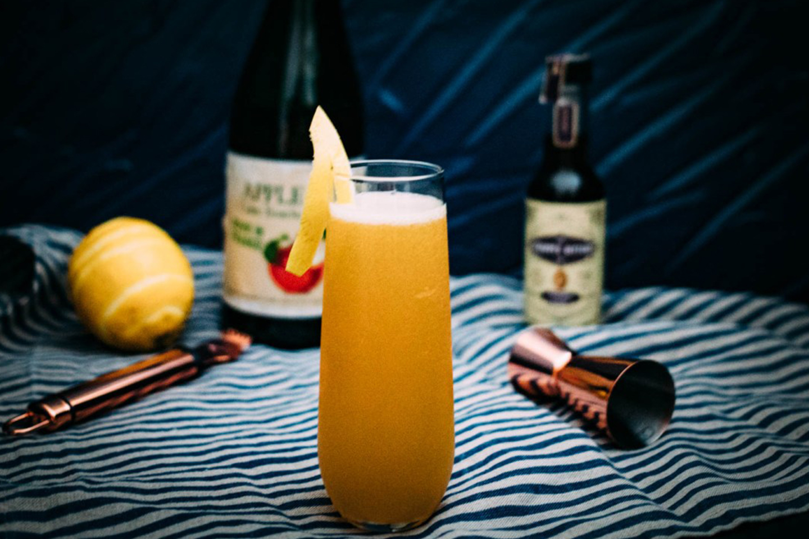

Clafoutis
Consiste en frutas, tradicionalmente cerezas, cubiertas con una masa líquida parecida a la de los panqueques
creme-brulee
Crema pastelera, sauve y aromatizada de vainilla, cubierta de una capa de azucar caramelizada
eclair
se hornea hasta que se infla y se vuelve crujiente por fuera y hueca por dentro. El interior se rellena con crema pastelera de diferentes sabores, como vainilla, chocolate o café
Cassoulet

plato tradicional de la gastronomía francesa, es el exquisito Cassoulet, exactamente de las regiones de Languedoc y Midi Pyrénées.
Confit de pato

un tierno muslo de pato que se deshace en la boca, se cocina a fuego lento con su propia manteca durante 3 ó 4 horas.
Estofado de pollo
.jpg)
Delicioso plato que se adora en un sartén con aceite de oliva o mantequilla y se cubre con un fondo de vino tinto, caldo de pollo, y especias.
Chartreuse
Se trata de un licor de alta graduación e intenso sabor que varía del dulce al picante, elaborado con una mezcla de 130 hierbas maceradas en alcohol de uva y luego destiladas,
French 75
Los ingredientes clásicos del coctel son ginebra, champán, azúcar y jugo de limón
French 76
El French 76, coctel de delicioso sabor agridulce, se prepara con 2 partes de vodka, una de champán, una de zumo fresco de limón y ¾ de jarabe de azúcar de caña, más hielo al gusto